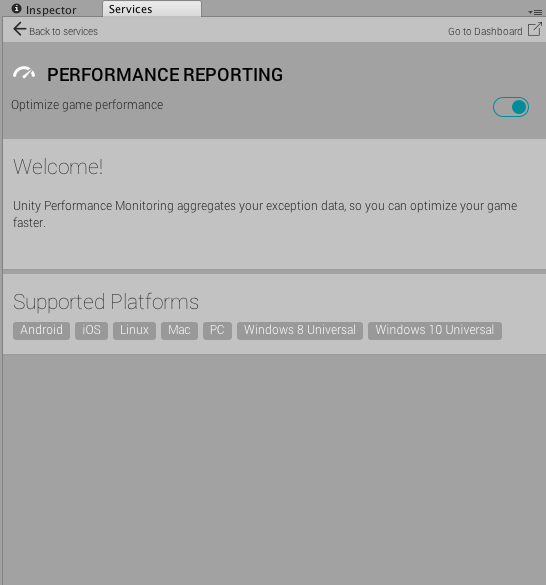

Unity Performance Reporting
Unity Performance Reporting captures and aggregates exception data and native crash reports, to help you understand what’s happening during run time and to optimize your project faster. Exceptions are updated to the Services Dashboard while the game is running as a completed build, and while in Play Mode within the Editor.

For information on enabling Performance Reporting to track crashes, including crashes in native user code, engine code, and plug-ins, see Setting up Performance Reporting.
Native crash reporting availability
Native crash reporting is available to Unity Plus and Pro users as part of the Unity Performance Reporting service.
| Platform | Available starting with version |
|---|---|
| iOS | 5.6 |
| Android | 2017.2 |
| MacOS | 2017.3 |
| Windows | 2018.1 |
iOS crash reporting
When you use IL2CPP and have the iOS Player Script Call Optimization setting set to Fast but no exceptions, iOS crash reporting captures crashes due to uncaught managed exceptions.
For more information on the Script Call Optimization settings, see iPhone Optimization.
Reports
Reports show the native stack trace of the crashed thread. If the crash is caused by an uncaught managed exception, the reports also show the managed stack trace of where the exception originates from, along with the native stack trace.
Note that iOS crash reporting cannot capture crashes caused by the application running out of memory and then being closed by the operating system.
View your crashes in the Unity Cloud Developer Dashboard. Here, select your game and select Enable Game Performance (see Image A).

Example
The example report below demonstrates what a report for a crash due to a managed exception looks like:
Managed Stack Trace:
at CrashTests.CrashNextUpdate () [0x00000] in <filename unknown>:0
at CrashTests.Update () [0x00000] in <filename unknown>:0
Native StackTrace:
Thread 0 (crashed)
0 crashreporttest CrashedCheckBelowForHintsWhy() (CrashReporter.mm:106)
1 crashreporttest UnhandledExceptionEventHandler_Invoke_m689053609 (mscorlib_System_Delegate3660574010.h:79)
2 crashreporttest RuntimeInvoker_Void_t2779279689_Il2CppObject_Il2CppObject(MethodInfo const*, void*, void**) (Il2CppInvokerTable.cpp:405)
3 crashreporttest il2cpp::vm::Runtime::CallUnhandledExceptionDelegate(Il2CppDomain*, Il2CppDelegate*, Il2CppObject*) (Runtime.cpp:350)
4 crashreporttest il2cpp::vm::Runtime::UnhandledException(Il2CppObject*) (Runtime.cpp:440)
5 crashreporttest ScriptingInvocationNoArgs::Invoke(ScriptingException**) (ScriptingInvocationNoArgs.cpp:131)
6 crashreporttest ScriptingInvocationNoArgs::Invoke() (ScriptingInvocationNoArgs.cpp:95)
7 crashreporttest MonoBehaviour::CallUpdateMethod(int) (MonoBehaviour.cpp:541)
8 crashreporttest void BaseBehaviourManager::CommonUpdate<BehaviourManager>() (Behaviour.cpp:169)
9 crashreporttest PlayerLoop(bool, bool, IHookEvent*) (Player.cpp:1721)
10 crashreporttest UnityPlayerLoopImpl(bool) (LibEntryPoint.mm:240)
11 crashreporttest UnityRepaint (UnityAppController+Rendering.mm:238)
12 crashreporttest -[UnityAppController(Rendering) repaintDisplayLink] (UnityAppController+Rendering.mm:54)
13 QuartzCore CA::Display::DisplayLinkItem::dispatch()
14 QuartzCore CA::Display::DisplayLink::dispatch_items(unsigned long long, unsigned long long, unsigned long long)
15 IOKit IODispatchCalloutFromCFMessage
16 CoreFoundation __CFMachPortPerform
17 CoreFoundation __CFRUNLOOP_IS_CALLING_OUT_TO_A_SOURCE1_PERFORM_FUNCTION__
18 CoreFoundation __CFRunLoopDoSource1
19 CoreFoundation __CFRunLoopRun
20 CoreFoundation CFRunLoopRunSpecific
21 GraphicsServices GSEventRunModal
22 UIKit UIApplicationMain
23 crashreporttest main (main.mm:32)